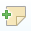
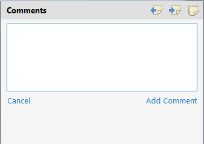
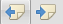
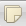

Comments
You may send your inspirations within an XMind file to your colleague or a friend. Ask for their comments. And in XMind 7, they can actually do Comment on your mind map, instead of modifying the map directly.
Add comments:
- Select a topic.
- Open the pop-out dialog with one of the following ways.
- Click Comments icon on the toolbar.
- Right-click the mouse, select 'Comments'.
- Click the blank bar to add a comment in the comments dialog.
- Click "Ctrl(Command)+Enter" to save comments.

Edit/Delete/Reply comments:
- Right click a exsiting comment
- You can:
- Edit comment
- Delete comment
- Reply comment
Show comments
You can click the left/right iconsat the upper right of the dialog to transfer to previous or next topic comment.
You can click the iconat the upper right of the dialog to show all comments in comments view.